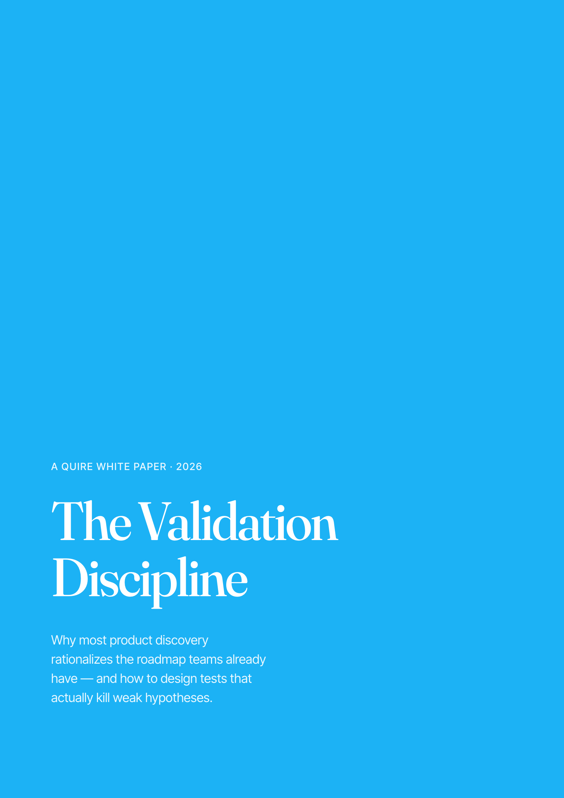
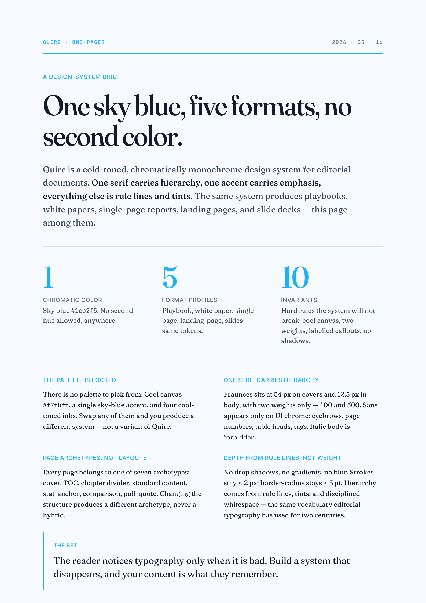
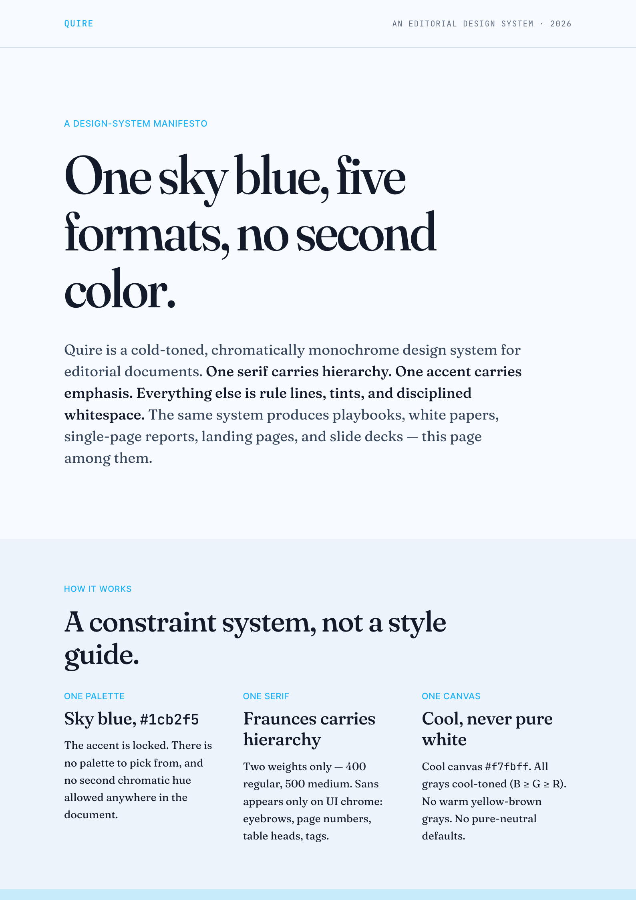
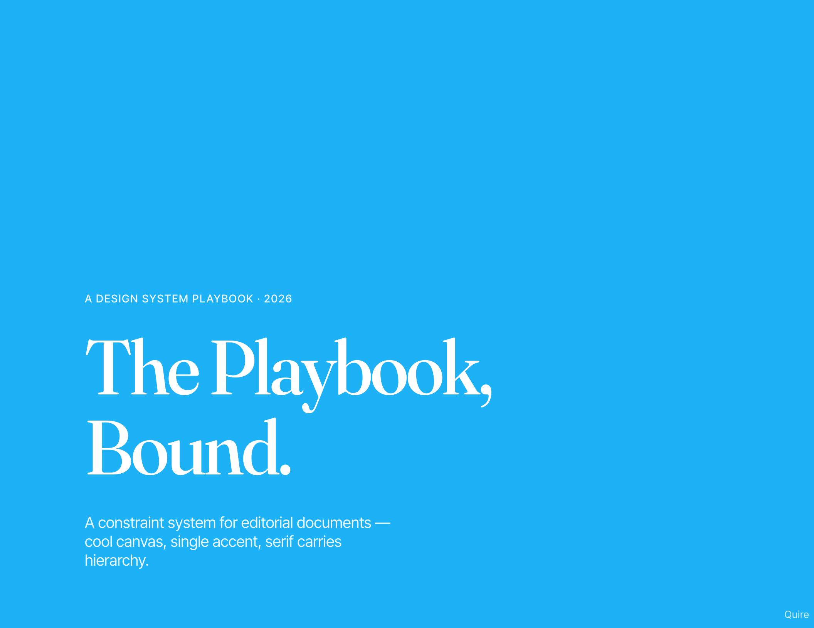
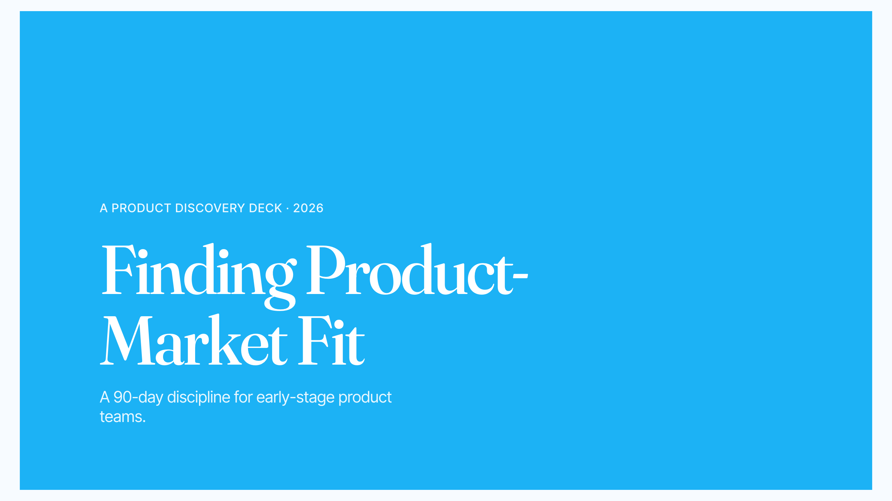

Quire
面向 playbook、白皮书、单页报告、landing page 与幻灯片 的编辑型排版系统。一种天蓝强调色，衬线负责层级，输出已排版完成的 PDF。
上手
安装
两种装法。
作为 agent skill 装上，然后用自然语言提需求；或者直接克隆仓库，手动编辑 HTML 模板。两条路最终产出相同。
方式 1 · 推荐
作为 agent skill
一行命令搞定。支持 Claude Code、Cursor、Codex、Goose 等所有 skills CLI 兼容的 agent。
任意支持的 agentnpx skills add FoundDream/Quire
Claude Code（全局，自动确认）
npx skills add FoundDream/Quire -a claude-code -g -y
装好后用自然语言提需求："做一份关于 X 的 playbook"、"把这份内容排成白皮书"、"turn this into an editorial PDF"。
方式 2 · 不需要 Node
手动安装
把仓库克隆到 agent 的 skills 目录。
用户级（Claude Code）git clone https://github.com/FoundDream/Quire.git ~/.claude/skills/quire
项目级
git clone https://github.com/FoundDream/Quire.git \
<project>/.claude/skills/quire
也可以完全不用 agent —— 直接打开 assets/templates/playbook.html 编辑，再跑 ./scripts/build.sh 打成 PDF。
引言
文档形态
一套设计语言，五种成品规格。
同一套色板、字体层级与组件库，可排成不同开本与页数的文档。Playbook、白皮书、单页报告、landing page 与幻灯片均已完整实现。
| 形态 | 页数 | 开本 | 状态 |
|---|---|---|---|
| Playbook | 10–80 | 11×8.5in 横版 | ● 已上线 |
| 白皮书 | 8–30 | A4 竖版 | ● 已上线 |
| 单页报告 | 1 | A4 竖版，固定一张 | ● 已上线 |
| Landing page | 连续滚动 | A4 宽，自由生长 + 自动分页 | ● 已上线 |
| 幻灯片 | 5–60 | 16:9 HTML 演示，方向键切换 | ● 已上线 |





引言
示例
11 页 playbook，用 Quire 介绍 Quire。
同一套设计系统排版自身：4 种内文原型、3 个章节分隔页、1 个 stat-anchor、1 个 pull-quote、1 个 colophon。
参考
设计系统
下方可视化呈现全部 token、页面原型、组件与规则。修改本文件顶部 :root 中的 CSS 变量即可换肤——各区块均由这些变量组合而成。
Quire · v1 · 2026
Design System Reference
Every token, archetype, component, and rule on one page. Edit
:root at the top of this file to retheme; every section below
is composed from those variables.
01 / 9
Tokens
颜色
冷色调、单色系：一种强调色、一组画布色、一套冷灰阶。不设第二种彩色。
Surface · 画布
Text · 冷灰文字色（B ≥ G ≥ R）
Accent · 天蓝（全局唯一）
02 / 9
Tokens
字体
Fraunces 可变衬线贯穿封面到正文；Inter Tight 无衬线仅用于页眉、页码等界面元素。字重只有 400 与 500：不加粗，正文不用斜体。中文由 Noto Serif SC / Noto Sans SC 接续。
字体角色
Editorial
Fraunces 文
编辑声音：标题、正文、引用与大数字。中文由 Noto Serif SC 接续。
Interface
Inter Tight 字
界面声音：眉题、表头、按钮、标签与元信息。中文由 Noto Sans SC 接续。
Code
JetBrains Mono
机器声音：代码、版本号、页眉页脚与坐标信息。
来源：assets/styles/quire-type.css 定义三类字体角色、Fraunces 可变轴、字号层级、旧变量别名与中文字体接续。
opsz 144 · SOFT 30
opsz 14 · SOFT 50
字号阶梯
封面、章节封面
章节起首
次级小节
正文阅读
图注、来源
界面标记
assets/styles/quire-type.css。03 / 9
Tokens
间距
基础单位 4pt，七级间距覆盖行内元素到封面大留白。页边距非对称（左紧右松），为页码与旁注留出右侧空间。
Scale · 间距阶梯
页面边距 · 非对称（左紧右松）
| 开本 | T / R / B / L | 说明 |
|---|---|---|
| A4 竖版 | 22 / 24 / 24 / 22 mm | 白皮书、单页报告、landing page |
| 横版（playbook） | 18 / 22 / 22 / 18 mm | 默认 playbook 规格 |
04 / 9
Tokens
描边 & 圆角
三种描边粗细足以覆盖所有分隔线、表头与 pull-quote 边栏。圆角维持极简：3pt 是 Quire 文档允许的最大圆角，更粗或更圆都属于另一套系统。
描边粗细 · 三个数值，1× 实际尺寸
边角半径 · 默认平直，3pt 为上限
05 / 9
结构
页面原型
Quire 文档的每一页必属以下七种原型之一。结构固定——一改版式即属另一类，不做混搭。
06 / 9
结构
页眉与页码
页眉与页码是仅有的、出现在版心之外的标记。冷灰等宽，字号很小——足以让读者定位，却低调到几乎隐形。标准内文、TOC、对照、版本页都带；封面与章节分隔都去掉；数据锚点和引文只保留页码。
| 元素 | 规格 | 位置 |
|---|---|---|
| Running header · 页眉 | mono 8pt · ink-faint · +0.04em | 距上边缘 12pt。左：文档名；右：当前章节标题。 |
| Page number · 页码 | mono 9pt · ink-faint · tabular-nums | 距下边缘 12pt，右下角（竖版与横版一致）。 |
| Margin rule · 边距细线（可选） | 1px · ink-faint | 页眉与正文之间的发线；仅对超过 40 页的文档启用——长文需要更强的视觉锚点。 |
07 / 9
基础组件
组件
以下为实时渲染。样式与模板一致——复制对应 CSS class 即可复用。
Callout · 4 种 label 变体
Compare table · 对照表
| 验证目标 | 使用方法 | 原因 |
|---|---|---|
| 问题是否真实、频繁 | 探索式访谈 | 开放式提问；能浮现未被引导的说法与绕行方案 |
| 付费意愿或承诺 | 预售 / LOI | 行为是最诚实的信号；口头意愿往往夸大 |
| 特定方案是否可用 | 原型测试 | 具体可测的原型；暴露假设失效之处 |
Tag pill · 标签
Stat block · 数据块
的初创公司死于「做了没人要的东西」——这还是在 agentic coding 把「造原型」压缩到一下午之前的数据。
行内强调 .hl 与术语 <em>
AI 改变内部流程，在于缩短决策到行动的间隔。关键不在更快，而是角色从单兵执行转向编排 Agent。.hl 与 术语标记 均可：前者用强调色 + 500 字重，后者用 标术语。
列表 · 无序、有序、定义
无序 · 破折号
- 信号（signal）：来自访谈、工单、埋点的观察。
- 假设（hypothesis）：带失败条件的预测——指标、量级、时间窗。
- 测试（test）：能证伪假设的最便宜实验。
有序 · 数字 + accent
- 把信号写成一句话。
- 改写为含指标、量级与时间窗的假设。
- 指出最便宜的、可能证伪它的测试。
定义 · 名词 + 释义
- Signal
- 来自客户或用户的观察——尚未成为主张。
- Hypothesis
- 带失败条件的预测：含指标、量级与时间窗。
- Validation
- 为证伪假设而做的测试——不是为了证实。
08 / 9
基础组件
图表与图示
「单 accent」的约束逼出一种编辑式可视化——不靠颜色编码、不要花哨修饰、用直接标注代替图例。下方八个 inline-SVG 图式覆盖大多数编辑场景；完整模板与多变量数据所需的 small-multiples 规则详见 references/diagrams.md。
09 / 9
用量上限
密度限值
任一超限即偏离 Quire。这些上限针对 AI 最常犯的错：把每一页都排成「最重要的一页」。
| 元素 | 上限 | 原因 |
|---|---|---|
| Callout（Exercise / Note / Think） | 每对开页 ≤ 2 个 | 超过 2 个会像带批注的讲义，不像书中一章。 |
| Pull-quote 页 | 每章 ≤ 1 个 | 引文页是标点；一章两个以上就成装饰。 |
| Stat-anchor 页 | 每份文档 ≤ 2 个 | 数字页是锚点；过多会退化成信息图。 |
| 每页辅色面积 | 视版面而定 | 强调色须稀缺。 |
Inline .hl 高亮 |
每页 ≤ 2 处 | 处处强调等于没有强调。 |